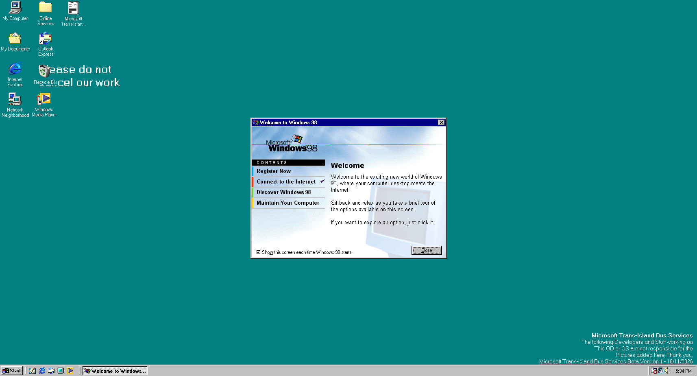

Trans-Island
Full Name: Microsoft Windows Trans-Island Bus Services
Codenamed: Microsoft Trans-Island Bus Services
Status: Beta 1 Release of November 2026
Release Scheduled: 23rd May 2027
Release to Manufacturing: 3rd April 2027
First Release: 23rd May 2027
Ownership Part of The Company:
Microsoft TIBS or on its boot screen "Trans Island" is a development release of Microsoft SkyPeak. Intended for Microsoft SkyPeak's New roadmap lineup in part of this project
is The Windows Transport Project which majorly release Windows Themed Transport Network of Singapore. Trans-Island is intended to release on SMRT Buses's 45th Aniversary
of The Offical Incorporation (23rd May 1982). The Current Build is Build 1023 (PR 1.02). Avaliable on the Pre-Releases Archive.


